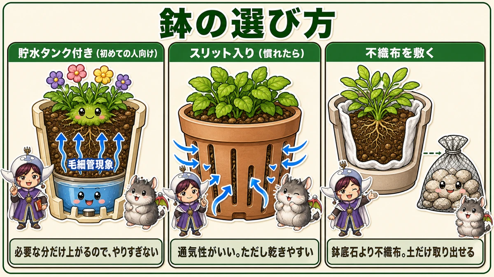
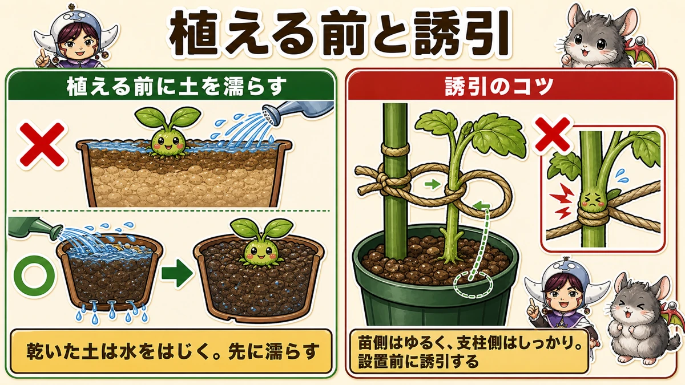
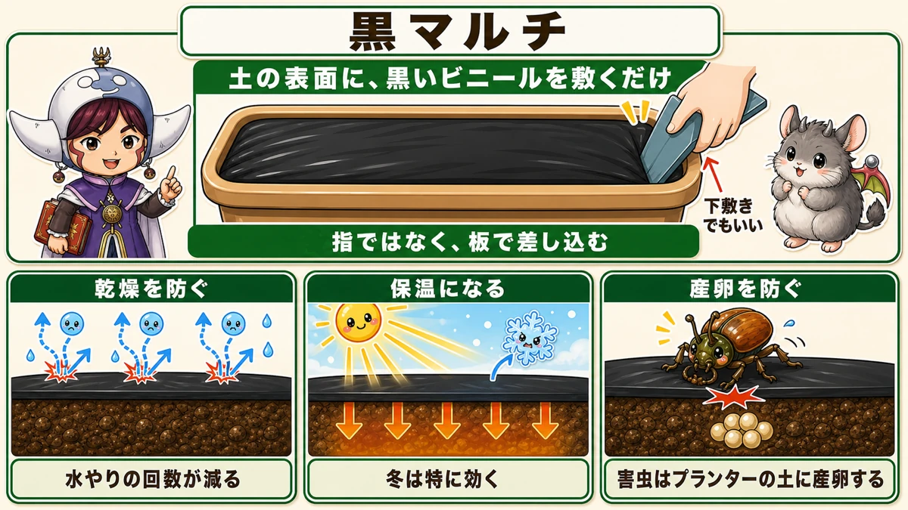
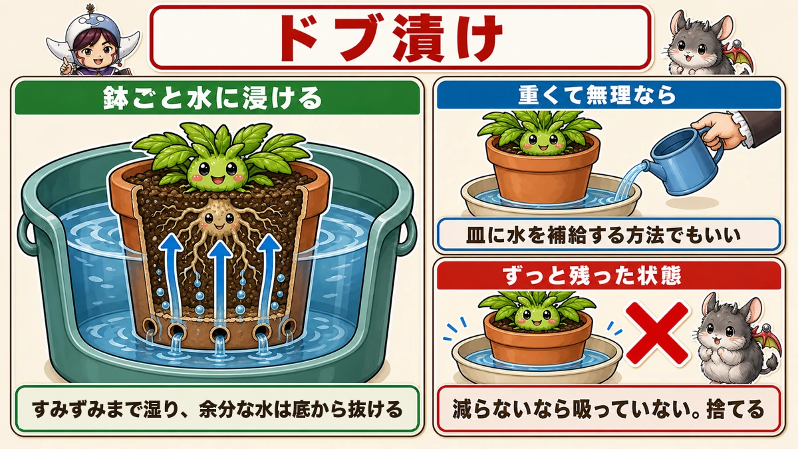
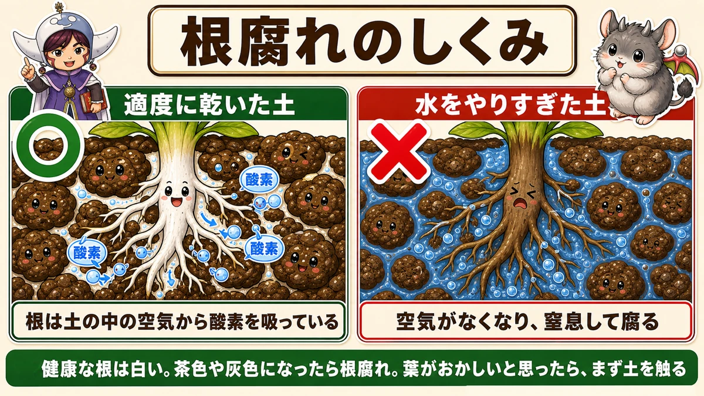

冬のプランター管理帳｜水やり・防寒・豆の冬越しを状態から判断する
どうも、8150（えいこう）です🌱 家庭菜園歴8年、理科の教員免許を持っていて、有機・無農薬で野菜を育てています。
📖 この記事の目次
この記事で分かること
- 冬でも鉢の中は乾きます。水やりは曜日で決めず、土の内部と排水を見て選びます。
- 葉がしおれたら、給水する前に湿りを確認。乾燥と過湿では、次にする作業が逆になります。
- 貯水式・スリット入りなど、容器ごとに管理が変わります。冬の玉ねぎでは、貯水部分の水残りにも注意します。
- 防寒は厚く覆うだけではありません。寒風を避けながら、晴れた日の蒸れや乾きも確認します。
- 豆の冬越しは、草丈と地域の冷え込みをセットで判断。摘心や間引きの数字には複数の説明があります。
- 春が近づいたら、覆い・株数・肥料の管理を見直します。冬の設定をそのまま続けないことが大切です。
冬のプランターで困るのは、「水を控えたほうがいい」と「乾かしちゃダメ」が両方聞こえてくることですよね。どっちやねん、となりますが、見ている鉢の状態が違うんです。湿っている鉢には待つ判断を、内部まで乾いた鉢には補う判断をします。
このページでは『土と容器』『株の状態』『置き場所と天気』を順に見ます。これから植えるみなさんは早見と手順から、すでに元気がなくなった株があるなら症状の章から読んでください。育てている野菜に関係するところだけ使えば大丈夫です☺️
冬越しは、寒い間に大きく育て切る作業とは限りません。春に育ち直せる状態を保つのも立派な目標です。小さい株を見るたびに水や肥料を追加する前に、根が働ける環境を整えていきましょう。
早見：プランターの冬越し（ひと目で分かる数字）
暦と株の大きさ
- そら豆の秋まき：10月を大まかな目安とする説明があります。実際は品種と地域で変わるため、種袋の適期を確認します。
- スナップエンドウの秋まき：11月を目安とする説明があります。寒冷地では春まきの選択もあり、全国一律に秋まきを勧める数字ではありません。
- 12月の植え付け：冬越し中の栽培例がある野菜でも、12月から始めてよいとは限りません。種まきと苗の植え付けを分け、地域に合う表示を優先します。
- スナップエンドウの冬越し苗：草丈10〜15cmを目標とする説明があります。春の収穫までこの高さに固定する意味ではありません。
- そら豆の冬越し苗：15〜20cmを目標とする説明と、15cmほどでも伸びすぎに注意する説明があります。別の説明には20cm以内を目指し、30cmを超えた株で摘心を検討するものもあります。
- そら豆の摘心：15cm付近と30cm超の例を平均せず、植えた時期・伸び方・地域を確認します。スナップエンドウへ同じ切り方を当てはめません。
- 冬を越した豆の間引き：節分を過ぎてからという説明と、2月下旬まで待つ説明があります。寒さが残る地域で、暦だけを理由に株を減らすのは避けます。
容器・水・覆いの目安
- 玉ねぎ用の容器の深さ：20cm以上を用意する例があります。ほかの野菜まで、この深さで足りるという基準ではありません。
- 玉ねぎの株間：10cmで2列、5cmで3列という比較栽培の例があります。密植したほうがよく採れると結論の出た比較ではありません。
- うね幅：鉢栽培には、畑と同じうね幅の数字を当てません。容器の内寸と、育てる野菜の株間から配置を考えます。
- 冬の給水時刻：必要な日は午前中に行う方法が示されています。夕方や夜に水を足して、冷え込む時間へ持ち越す流れを避けます。
- 水やりの間隔：毎日、何日おきと固定しません。土の湿り、雨の入り方、日照、風、容器の形で判断します。
- 鉢を水に浸す方法：適切な浸水時間や深さの共通値は確認できません。容器に適した方法かを確かめ、終わったら排水します。
- 防寒による温度差：不織布の実演には外8℃・内9.8℃、別の保温ビニールの説明には約5℃高い例があります。資材も条件も異なり、冬の鉢の温度上昇を保証する数字ではありません。
- 元肥：豆を肥料なしで始める説明と、元肥を使って育てる説明があります。土の履歴が異なるので、双方の量を合算しません。
- 追肥：冬に一律で追加する日程は置きません。作物ごとの栽培計画と、すでに土へ入っている肥料を確認します。
- 収穫までの日数：冬越し野菜をまとめた共通値はありません。品種の表示と実際の生育を見て、収穫予定を組みます。
- 連作の間隔：この材料には、鉢栽培全体へ使える一律の年数はありません。前作の種類と、病気や根の傷みの履歴を残して判断します。
数字を使う前にそろえる条件
同じ『冬の豆』でも、小さな苗と、暖かさで伸びた大苗では管理が違います。草丈の数字だけを抜き出して、背の低い株まで切ってしまうと、本来残したい部分を減らしかねません。数字は作業の命令ではなく、株を詳しく見るきっかけとして使ってください。
まずメモするのは、品種名、種まきまたは植え付けの日、容器、冬の置き場所です。そこへ『今日は土が湿っていた』『覆いの中が暖かかった』という観察を足すと、同じ鉢でも日によって作業が変わる理由が分かります。
- 種袋や苗の表示で、地域別の適期を見た
- 草丈の数字が、育てている野菜の説明か確認した
- 容器の排水穴と貯水部分の有無を調べた
- 水や肥料の管理を、畑の話から丸ごと移していない
- 収穫量より先に、冬を越せる株の状態を目標にした
大きなプランターを用意すれば、必ず何本採れるというわけでもありません。品種、株数、日照、冬の傷みで変わります。まずは手元の容器で管理できる株数を選び、収量の約束に引っ張られない計画にしておきましょう。
作業の手順（時期の順）
1．植える前に『始める栽培』と『冬越し中の栽培』を分ける
- これから種をまくのか、購入苗を植えるのか、すでにある株を守るのかを決めます。
- 種袋や苗の表示で、品種と地域別の適期を確認します。
- 春の収穫を目指す作物なら、寒い間に保ちたい株の大きさも確認します。
- 今から始めるには遅い場合は、春まきや別の適期を選び直します。
そら豆やスナップエンドウの冬越し管理は、秋に育った苗がある前提の話を含みます。「冬に管理できる」と「真冬にまいて間に合う」は別です。お店に苗が並んでいても、その品種が地域の寒さに合うかは先に見てください。
にんにく、玉ねぎも、すでに植えてある株の管理と、これからの植え付けを分けます。アスパラガスの大苗を冬に植える方法や鉢での収量については、このページで扱う材料だけでは条件が確かめられません。『12月ならこの野菜を植えれば大丈夫』という一覧にはせず、確認できる管理から進めます。
寒い時期にまける葉物や大根の栽培例もあります。ただし、品種や地域の条件つきです。大根の畑の実演を見て、浅い鉢へ同じようにまくのは別の問題になります。作物の適期を確認したあと、容器がその野菜に向くかを確認する順番です。
2．容器の水の入口と出口を調べる
- 排水穴の位置を確認し、底が置き場所に密着していないか見ます。
- 貯水式なら、水を入れる部分と、余分な水を逃がす仕組みを調べます。
- 側面にスリットがあるなら、土が流れ出す場所と乾き方を確認します。
- 水を含んだ状態でも動かせるかを考え、管理方法を選びます。

スリット入りの容器は、空気や水の通りを確保しやすい選択肢です。そのぶん乾き方にも気を配ります。『通気性がよいから、水の確認は要らない』とはならないんですよね。日当たりや風の強さが変わった日にも、内部の状態を確かめられる人に向きます。
貯水式は水の補給を管理しやすい面があります。ただし冬の玉ねぎでは、下に水を残さないよう注意する説明があります。初心者向けという評価だけで選ぶ前に、育てる作物と季節の管理条件まで確認してください。
底を地面から離す方法には、水がたまる状態を避けやすくする目的があります。台に載せたら、排水穴をふさいでいないか確認します。高くした高さだけで成功を判断せず、実際に水が抜けるかを見るのが先です。ぐらつく台を使うと、風への対策が別に必要になります。
3．土を入れ、流出防止と排水を両立させる
- スリットから土がこぼれる容器では、内側に不織布を沿わせる方法を検討します。
- 土を少しずつ入れ、内張りが容器の内側へなじむよう整えます。
- 鉢底石を使う方式なら、容器の形に合うかと、あとで土と分ける作業を考えます。
- 土が抜けないことだけでなく、水が抜けることも確認します。
不織布は、織って作った布とは異なる、繊維をまとめたシート状の資材です。この内張りでは、スリットから土が流出するのを抑える役に使います。上から株へかける防寒用の覆いとは使う場所が違います。同じ資材名でも、何のために使うかを分けて考えましょう。
鉢底石を使う例も、内張りを使う例もあります。どちらかを全ての容器に必須とする話ではありません。内張りは石と土の仕分けを減らす選択、鉢底石は容器に合わせて底の通気・排水を考える選択です。両方を足せば必ずよくなるという発想にはしません。
使い終わった容器をもう一度使うときは、前作の根や残った土で、穴が見えにくくなっていないかも調べます。土の表面はきれいなのに、水の出口だけふさがっていることも考えられます。植えてから直すより、空の容器で確認するほうがラクです。
4．乾いた土の準備と、植えたあとの給水を分ける
- 植える前の土を確認し、乾いているなら水となじませます。
- 水が底から出ることを確認する方法では、出た水をためっぱなしにしません。
- 苗を植えるのか、豆の種をまくのかを分けて次の給水を判断します。
- すでに湿った土へ豆をまく場合は、まいた直後に追加の水を与えない説明もあることを確認します。

『植える前に湿らせる』という準備と、『種をまいたあとにもう一度水を足す』という作業は同じではありません。豆の種まきでは、土にすでに水分があれば、追加の給水をしない方法があります。水を使う工程が続いて見えても、それぞれ必要かを分けてください。
苗を植える場合は、活着、つまり新しい場所へ根づくまでの水分を考えます。冬の水やりを減らす話だけを覚えて、乾いた土へ苗を入れたままにすると、植え付け直後の条件を見落とします。植え付け時と、根づいたあとの維持管理で段階を変えるわけです。
支柱で支える苗なら、元のポットの土の外側へ支柱を入れる方法があります。ひもは茎側に余裕を残し、支柱側を固定します。風のある置き場所へ移してから慌てて結ぶより、設置前に支えを整えておきましょう。元の実演はトマト苗なので、冬の豆に必要な支えは、その作物の伸び方に合わせます。
5．表面を覆うなら、土を確認する場所も残す
- 黒マルチを使う場合は、土の表面を覆う目的を確認します。
- 平らなプラスチックの板などで、容器の端へシートを差し込む方法を使います。
- 植える位置に開口部を設け、株のまわりで無理に引っ張らないよう整えます。
- 覆ったあとも、植え穴付近などから土の湿りを確かめます。
黒マルチは、土の表面に敷く黒いシートです。乾き方を抑え、水分管理を助ける方法として使われます。土へ産卵する害虫への予防策にもなりますが、植え穴やすき間があり、すべての虫を遮るわけではありません。葉裏を確認する作業まで省かないようにしてください。
覆いのない鉢と同じ感覚で水を足すと、乾きにくくなったことを見逃します。マルチを敷いた日は、その鉢の管理条件が変わった日です。次の給水をカレンダーの予定どおりに進めず、一度中の湿りを見直しましょう。

6．冬の日当たりと風を、実際の鉢の位置で確かめる
- 晴れた日に、鉢を置く場所へ日が入る時間帯を見ます。
- 葉が繰り返し揺さぶられる場所や、覆いがめくれる場所を確認します。
- 排水でき、管理のために土を触れ、株を見られる位置を選びます。
- 急な冷え込みへの退避を考えるなら、無理なく動かせる鉢かも確認します。
『南向きだから安心』『壁ぎわなら暖かい』と決めてしまうより、そこへ実際に光が届くかを見ます。方角がよくても建物の影に入る場所はあります。壁の蓄熱で何度暖かくなる、といった値を、この材料から全てのベランダへ当てはめることはできません。
移動できる育苗ポットには、急な冷え込みの際に室内で管理する案もあります。これを、すべての大鉢を冬中室内へ入れる決まりにしないことも大切です。『一時的に退避する』のか『室内で育て続ける』のかで、必要な光や管理が変わります。
7．寒風を弱め、暖かい日には覆いの中を確認する
- 豆の苗では、草丈と葉の傷みを見て、寒風を受けにくくする必要を判断します。
- 防寒の覆いを設けたら、風で外れたり、株を押したりしていないか見ます。
- 晴れて暖かい日は、内部の蒸れと、土の乾きも確認します。
- 寒い日の対策を、そのまま暖かい日の設定として固定しません。
豆の冬越しには、強く暖めるより北風をやわらげる目的の説明があります。大きく伸びた株を守るために覆いを重ねる例もありますが、すべての小苗を同じ厚さで包む話ではありません。株の大きさと傷み方を見て調整してください。
覆いをかけたら作業完了、と思いたくなりますよね。ところが、晴れた日には中の状態が変わります。外は寒くても、覆いの中の乾きや蒸れを見落とせません。『今日は外すか』『開けて確認するか』『そのまま守るか』を、天気と株から選びます。
8．冬の給水は、確認してから午前中に行う
- 葉だけで決めず、土の表面と内部の湿りを調べます。
- 乾燥しているなら、冷え込む夜を避けて午前中に給水します。
- 水が抜けるかを見て、受け皿へ残った水も確認します。
- 湿っている鉢には、習慣で追加しません。
- 次の確認では、前回からの雨、晴天、風、覆いの変更も振り返ります。
上から与える方法では、乾燥が強い鉢へ底から水が出るまで給水する例があります。下から吸わせる方法も選択肢ですが、同じ鉢へ両方を続けて行う必要があるとは限りません。目的は水を使う工程を増やすことではなく、乾いた土へ水分を行き渡らせ、余った水を逃がすことです。

鉢を水へ浸して吸わせる方法を選ぶ場合は、持ち上げられる重さかを先に考えます。材料には、全容器共通の浸す時間や深さはありません。冬の大鉢を無理に運ぶ方法を標準にせず、適した容器と管理できる方法を選びましょう。給水後の排水は省きません。
9．寒い間は、不要な間引きや肥料追加を急がない
- 豆の株数を減らす前に、冬の傷みがまだ続く時期かを確認します。
- そら豆の草丈が気になったら、摘心する説明の対象と条件を調べます。
- 土へすでに入れた肥料と、使った培養土の表示を見ます。
- 生育が遅いだけなのか、根や排水に問題があるのかを分けます。
冬の間は、保険として株を残し、暖かくなってから間引く考え方があります。ただし、この方法を理由に、春も混み合ったまま放置するわけではありません。寒さで失う株を見極める時期と、残す株を整える時期を分けます。
肥料も『冬だからゼロ』『小さいから追加』のどちらかで片づけません。元肥を使って順調に育ち、年内の追肥をしない例と、豆を肥料なしで始める例があります。同じ結果をねらっていても、出発する土の条件が違います。追加する前に、その鉢の履歴へ戻るのが先です。
10．春に向けて、冬の管理から切り替える
- 新しい葉や茎の動きを見て、株が育ち始めているか確認します。
- 寒い夜が残るかも見ながら、覆いの扱いを変更します。
- 冬に残していた豆の株数を、その作物の育て方に合わせて整理します。
- 伸びる株では、支えやひもの余裕を見直します。
- 水の減り方が変わったら、土の確認結果をもとに給水も調整します。
冬の設定のまま春へ進むと、覆いの中で蒸れたり、混み合った株を整理する時期を逃したりします。豆では、花の時期に覆いを外し、虫が訪れる環境を考える説明もあります。寒さがやわらいだ段階で、守る作業から育てる作業へ移る準備をしましょう。
玉ねぎでは球がふくらむ春の段階の水分も、冬とは分けて考えます。にんにくなども、冬に葉が小さいときの確認だけで管理を終えず、その後の生育に合わせます。『冬のあいだうまくいった方法』を、季節が変わってからも無条件で続けないことがポイントです。
11．空いた容器と土は、次の栽培のために履歴を残す
- 株を片づける前に、健康に育ったか、根に傷みがあったかを書き留めます。
- 容器の排水部分を確認し、次に使う前に不具合を把握します。
- 使い終わった土は、前作と、すでに入れたものが分かるようにします。
- 土の再生を行うなら、その方法自体の手順が確認できる資料を用意します。
この回の材料では、使用済みの鉢土へ米ぬかや砂糖を混ぜて発酵させる配合、日数、完成の見分け方を確かめられません。畑の土を維持する話から、袋の中で行う鉢土の再生レシピを作るのは避けます。白いカビが出れば完成、とも判定できません。
今できる準備は、土の来歴と根の状態を残すことです。何を植えて、何を加え、どんな不調があったか。この記録があると、次に同じ土を使うか、別の方法で扱うかを考えやすくなります。冬の空き時間は、配合を急ぐより、次の栽培に迷いを持ち越さない整理へ使いましょう。
失敗の見分け方（症状→原因→やること）
葉がしおれるのに、土は湿っている
- 症状：葉に張りがなく、土を確認すると水分が残っています。
- 考えられる原因：水の抜けが悪い、給水が続いている、根が傷んで吸水しにくいなどが考えられます。葉の姿だけで根腐れとは確定できません。
- やること：追加の水をいったん止め、受け皿、鉢底、貯水部分を確認します。排水の不具合があれば先に見直します。

しおれを見ると、つい水を足したくなります。でも根が働きにくくなった株では、土に水があっても葉まで届かないことがあります。そこで水を加えると、根のまわりが湿った状態を長引かせてしまいます。『葉に水が届かない』ことと『土に水がない』ことを分けるのが、診断の出発点です。
根腐れの説明には、根が茶色や灰色になり、組織が崩れる例があります。ただし、この色だけで病名を決めません。健康な株を確認のために何度も抜くのも負担になります。まず、鉢を動かさずに分かる土と排水の条件から調べましょう。
表面は湿って見えるのに、内部が乾いている
- 症状：上は湿った色でも、土の内部を確認すると乾いています。
- 考えられる原因：少量の給水で表面だけ濡れた、雨が十分入らなかった、風や日照で乾いたなどが考えられます。
- やること：必要な水分が行き渡る方法で午前中に給水し、排水を確認します。その後も表面だけで判断しません。
『昨日雨だったから水は足りている』とも限りません。軒の下に置いた鉢、覆いのある鉢では、雨の記録と鉢へ入った水の量が一致しないからです。天気は判断材料の一つですが、最後に見るのはその鉢の土です。
植えたばかりの苗や、種をまいて発芽を待つ段階では、根づいた株と同じ省水管理を当てないようにします。冬の乾きにくさを理由に確認そのものをやめると、必要な場面での乾燥を見落とします。
受け皿や貯水部分の水が残り続ける
- 症状：給水後の水が下に残り、次に見ても減っていません。
- 考えられる原因：鉢が十分に吸っていない、給水量が多い、排水口や置き方に問題があるなどが考えられます。
- やること：残った水を確認して除き、鉢内の湿りと容器の仕様を見直します。冬の玉ねぎは特に貯水部分も点検します。
貯水式には、その容器に合わせた水位や管理方法があります。一般の受け皿へ水をためることと、同じ方式だと思わないでください。どちらも下に水がある見た目ですが、使い方の条件まで同じではありません。
排水口を台でふさいでいた場合は、台の形や置き位置を変更します。土の中へ何かを足す前に、容器の外で直せる不具合を探しましょう。これ、地味ですけど、給水量だけを悩み続けるより原因に近づけます。
葉先が傷み、寒風のあとに元気がなくなった
- 症状：冷え込みや強い風のあと、葉先などに傷みが見られます。
- 考えられる原因：寒さ、凍結、風による負担が候補です。乾燥や根の傷みもありうるので、天気だけで決めません。
- やること：土の湿りも確認し、寒風の当たり方と覆いの状態を見直します。傷んだ葉だけを見て、すぐ水や肥料を増やしません。
冬越しする豆では、苗が大きく伸びた状態に注意する説明があります。傷みが出たら、草丈と植えた時期も一緒に振り返ります。大苗の保護を強める話と、どの株も大きく育ててから冬を迎える話は同じではありません。
覆いの中でも傷むなら、風でめくれていないか、株へ押し当たっていないかを見ます。資材を使った事実だけでは、株が守られたことの確認にはなりません。設置後の株の姿まで見ることが大切です。
覆いの中が蒸れ、晴れた日に状態が悪くなる
- 症状：覆いの内側に湿りがこもる、暖かい日に株がぐったりするなどの変化があります。
- 考えられる原因：覆いの中の温度や湿りが変化し、株に合わなくなっている可能性があります。土が乾きすぎる場合もあります。
- やること：覆いを開けて内部と土を確認し、天気に合う使い方へ調整します。暖かい日にも保護を重ね続けないようにします。
外気の数字だけを見て「まだ寒いから閉じたまま」と判断すると、覆いの中の変化を拾えません。朝の寒さと昼の晴天は、同じ日でも別の管理条件になります。ずっと見張る必要はありませんが、天気が変わった日は中を確認するきっかけにしてください。
そら豆が冬前に大きく伸びた
- 症状：草丈が伸び、冬越し苗の説明で示される大きさを超えています。
- 考えられる原因：種まきや植え付けの時期、暖かさ、土の肥料条件などが関係します。草丈だけで原因を断定しません。
- やること：そら豆を対象とした摘心の説明を確認します。切る基準の異なる例を平均せず、地域と株の状態に合う判断をします。
摘心は茎の先端を切る作業です。冬越しで紹介される目的と、その後の枝の管理で行う目的を混ぜないようにします。背が高いという理由だけで、別の豆まで同じように切るのは避けてください。
伸びすぎへの対策を考える場面で、さらに肥料を追加する必要があるとは限りません。成長が速すぎる株と、根が傷んで小さい株は、同じ『予定の大きさと違う』でも状態が逆です。
葉や茎がほとんど伸びず、肥料を足したくなる
- 症状：寒くなってから、目に見える生育がゆっくりになっています。
- 考えられる原因：季節による生育の遅さ、日照、水分、根の状態、肥料条件などが候補です。
- やること：まず株の傷み、土、排水、日照を確認し、元肥の履歴を見ます。大きくならないという理由だけで追加施肥しません。
冬越し苗なら、春まで状態を保つことが目的になる期間もあります。夏のように毎日伸びないから失敗、とは限りません。新しい傷みが増えているか、土がいつも同じ湿り方かを見て、単なる成長の遅さと分けます。
肥料不足を考える場合も、すでに肥料が入った培養土なのか、前作で何を入れたのかを確認します。土の情報が抜けたまま複数の方法を足すと、追加したものの効果や負担を後から判断しにくくなります。
鉢の土に白いものが見える
- 症状：表面などに、白いカビのようなものが見られます。
- 考えられる原因：湿った状態が続くことなどが関係する場合があります。見た目だけで有用な発酵や病気を決めません。
- やること：土の湿りと排水、株の元気を確認します。白いものがあるだけで『再生完了』とせず、別途確認された方法で土を扱います。
栽培中の鉢と、別の手順で再生を進める土袋では、状況が異なります。発酵の話を覚えているからといって、植わった鉢へ砂糖などを加えてよいとは言えません。まずは今、どの工程の土を見ているのかを整理してください。
説明が分かれていること
貯水式は扱いやすいのか、水を残さないほうがよいのか
- Aという説明：一般的なプランター栽培では、貯水式が初めての人に扱いやすい選択肢として紹介されています。
- Bという説明：冬の玉ねぎでは、貯水部分へ水を残さないよう注意する説明があります。
- どう考えればよいか：容器の評価と、特定の作物・季節の水管理を分けます。貯水式ならどの季節も満水でよい、とは考えません。
Aは容器の選択、Bは育てている鉢の管理です。片方を消さなくても両立します。今ある貯水式の鉢をすぐ買い替える前に、水の残り方と仕様を確認してください。容器を替えれば給水の判断が不要になる、という話でもありません。
水は上から与えるのか、鉢を浸して吸わせるのか
- Aという説明：通気性のよいスリット容器を使い、鉢を水に浸して下から吸わせる方法があります。
- Bという説明：玉ねぎの植え付けでは、土が湿っていれば給水をほぼせず、乾燥が強ければ底から水が出るまで与える方法があります。
- どう考えればよいか：給水方法を一つに固定する前に、土の湿りと容器を見ます。給水後に水を残さない条件は省きません。
下から吸わせる方法は、手元の重さで実行できるかも大切です。上から与える方法でも、内部の乾きと排水を確認する工程があります。『どちらが正解か』だけで選ばず、必要な水分を補い、余った水を逃がせるかで考えます。
毛細管現象は、細いすき間に水が移動する現象です。根が欲しい量だけを判断して、余分な水を遮断する装置ではありません。このしくみを使った給水でも、容器の管理や排水の確認が要ります。
鉢底石を使うのか、不織布を内張りするのか
- Aという説明：鉢底石を使い、容器の底の通気と排水を考える方法があります。
- Bという説明：スリット容器では、不織布を内側へ沿わせて土の流出を抑える方法があります。石と土の仕分けを減らす意図もあります。
- どう考えればよいか：容器の形と後片づけまで含めた違いです。全ての鉢で石が必須、あるいは全て不要という結論にしません。
どちらの実演も、冬の全作物を同条件で比べた試験ではありません。別の容器で使うときは、その容器の排水の仕組みへ戻ります。資材名が同じでも、使う厚さや製品の条件までこのページで一律には決めません。
そら豆は何cmで摘心を考えるのか
- Aという説明：冬越し苗の目標を15〜20cmとする例があります。
- Bという説明：15cmほどでも育ちすぎへ注意し、さらに伸びる株の先を切る例があります。別の説明は20cm以内を目指し、30cmを超えた場合に摘心を検討します。
- どう考えればよいか：15〜30cmという一つの切る範囲へまとめません。地域、植えた時期、伸び続けているかをそろえて選びます。
『冬越しにちょうどよい大きさ』と『大きくなった株をどう扱うか』は、問いが少し違います。目標の高さを超えたら自動的に切る、と変換しないようにしてください。数値が合わないときほど、どんな株を対象にしているのかを読みます。
豆の元肥は要るのか、要らないのか
- Aという説明：豆類を肥料なしで始める方法があります。
- Bという説明：元肥を使ってそら豆を育て、順調なため年内の追肥をしない方法があります。
- どう考えればよいか：元の土、前作、最初に入れたものの条件が違います。豆なら一律無肥料、あるいは必ず追加という選択にはしません。
元肥を使う方法のあとへ、別の方法の追肥を足すと、それは元のどちらの手順とも違う管理になります。使った土の表示と、すでに加えた肥料を先に確認しましょう。種類や濃さを無視した量の足し算はしません。
豆の間引きは節分のあとか、2月下旬か
- Aという説明：節分を過ぎたところで株を整理する方法があります。
- Bという説明：2月下旬まで待つ方法があります。
- どう考えればよいか：厳しい寒さがある間は、傷む株を見込んで残す考え方が共通しています。カレンダーだけで決めず、地域の寒さと残った株の状態を見ます。
冬越しの保険として残した株を、春に整えるという流れです。早く一本へ絞るほど丁寧、という作業ではありません。一方で、保険として残す説明を理由に、春もずっと株を整理しないのは別です。
覆えば何℃暖かくなるのか
- Aという説明：不織布の実演で、外気8℃に対して内側9.8℃という測定例があります。
- Bという説明：保温ビニールの説明には、約5℃高くなる例があります。
- どう考えればよいか：資材も測定条件も別です。平均の温度差を作らず、自宅の鉢が同じだけ暖かくなる保証にも使いません。
温度差が大きいほうを選べば、どの苗にもよいとは限りません。豆の冬越しで寒風を弱める目的と、強く保温する目的は同じではないからです。晴れた日の内部も見て、必要な保護を選びます。数字より先に、何から株を守りたいかを決めてください。
よくある質問
冬は何日おきに水をやればよいですか
このページでは、固定の間隔を決めません。土の内部が乾いているかを見て、必要な日は午前中に与えます。雨が入る鉢と軒下の鉢、覆いのある鉢でも違うため、同じ曜日に全部へ水を配る方法は避けましょう。
葉がしおれたら、まず水をやってよいですか
先に土の湿りを確認してください。乾燥なら給水を考えますが、湿った鉢では排水や根の状態を調べます。葉がしおれるという一つの症状だけでは、水不足と根の不調を区別できません。
土の表面だけ触れば判断できますか
表面と内部が違う状態のことがあります。マルチや覆い、少量の給水の影響もあるので、株を傷めないよう注意しながら内部の湿りも確かめます。雨が降った日にも、その鉢へ雨が入ったかを確認してください。
貯水式なら水を入れっぱなしで大丈夫ですか
全ての野菜と季節に共通する使い方ではありません。冬の玉ねぎには、水を貯水部分へ残さないよう注意する説明があります。容器の仕様と、育てる作物の管理条件を一緒に確認しましょう。
鉢を水に浸すと根腐れしなくなりますか
その保証はありません。下から吸わせる方式でも、水が残り続けない管理が必要です。通気性のよい容器の実演を、排水しにくい鉢へ無条件に移さず、終わったあとの水の抜け方まで確認します。
大きなプランターを持ち上げられません
無理に浸す方法を選ばなくて大丈夫です。土の乾きと排水を確かめながら、管理できる給水方法を選びます。今後容器を買う場合も、土と水が入った状態で扱えるかを考えておきましょう。
不織布は鉢の中と株の上、どちらに使いますか
目的が違います。内張りは土の流出を抑えるため、株の上の覆いは冬の保護のために使う例です。内側へ敷いた資材が排水を妨げていないか、上の覆いが蒸れや株への負担を生んでいないか、それぞれ確認します。
黒マルチがあれば虫を見なくてよいですか
見回りは続けます。土へ産卵する虫への予防策として使える一方、開口部やすき間もあります。土を覆う方法だけで、葉につく虫まで全て防げるとは考えません。
南向きの壁ぎわへ置けば冬越しできますか
方角と壁だけでは保証できません。実際に光が届くか、風が強くないか、排水と給水を管理できるかを見ます。置き場所を変えたあとは乾き方も変わるため、移しただけで確認を終えないようにしてください。
そら豆とスナップエンドウは同じように摘心できますか
この材料では、そら豆の大苗の摘心をスナップエンドウへそのまま使う根拠はありません。作物名と、摘心する目的を確認してください。冬越し苗の高さの目安も、それぞれ別に扱います。
12月からにんにくや玉ねぎを植えてよいですか
冬越し管理の例だけでは、12月の植え付けの適否まで判断できません。品種と地域別の適期、種か苗かを確認します。候補の名前が一覧にあることと、今から始めて間に合うことは分けて考えましょう。
寒冷地でも豆を秋にまいて冬越しさせますか
寒冷地のスナップエンドウには春まきの説明もあります。秋まきの月だけを全国共通の予定にせず、種袋の地域別の表示を優先してください。すでに苗がある場合は、その株を守る管理と、次にまく計画を分けます。
冬に伸びないので肥料を足してよいですか
追加する前に、根の環境と土の履歴を見ます。寒い間の成長の遅さだけでは不足と判断できません。排水が悪い鉢へ肥料を加えても、その排水の問題は解決しないため、確認する順番が大切です。
使い終わった土は、このページの方法で発酵させられますか
このページには、配合や完成条件を確認した鉢土の発酵手順は載せていません。前作と不調の履歴を残し、再生を行うときは別途確かめられた手順を用意してください。白いカビや温かさだけで、次の植え付けに使えるとは判断しません。
冬を越したら覆いはいつ外しますか
春の生育と天気を見て調整します。豆では花の時期に覆いを外す説明もありますが、まだ寒い夜が続くかも確認します。暦の一日を全国共通の取り外し日とせず、日中の内部の状態も見てください。
学ぶ：冬の鉢と根の呼吸のしくみ🔬
根には、水だけでなく酸素も必要です
根は水や養分を取り込むだけでなく、呼吸もしています。根のまわりにある空気から酸素を得られることが、働き続けるための条件です。土に水があるかだけでなく、空気が入れる状態かも考える必要があります。
土は粒の集まりです。粒の間のすき間には、水が入る部分も、空気が入る部分もあります。水を与えて一時的に湿ることと、すき間が水で満たされた状態が長く続くことを分けてください。
排水や空気の通りが悪く、根のまわりがずっと水で覆われると、酸素を得にくくなります。その状態が続くことは、根の傷みにつながります。だから給水には、水を入れるところだけでなく、余分な水が出るところの確認も含まれるわけです。
『根が溺れる』という言い方は、この酸素を得にくい状態をイメージするためのものです。葉がしおれた株の原因を、全て水による窒息だと決める言葉にはしません。乾燥、寒さ、ほかの根の不調も分けて調べます。
冬に減る水と、鉢から失われる水
冬は夏より水が蒸発しにくくなる場面が多く、濡れた土が長く湿っていることがあります。夏の給水習慣を続けると、次の水が不要なうちに追加してしまいます。季節が変わったら、確認の結果に合わせて習慣も変えます。
一方で、鉢の中の水が冬は全く減らないわけではありません。日当たり、風、雨よけ、容器の通気性によって、内部が乾いてくることがあります。『冬は乾きにくい』は、『冬は確認しなくてよい』という意味ではないんですね。
同じ日に水をやった二つの鉢でも、次に必要になる日が同じとは限りません。片方にはマルチがあり、片方は土が露出している。片方は雨が入り、片方は軒下。この条件を見れば、鉢ごとに確認する理由が分かります。
下から水が上がるしくみと、排水の役割
土の細いすき間を通って水が移動する性質を利用すると、鉢の下側から水分を供給できます。貯水式や鉢を浸す方法で説明される毛細管現象は、この水の動きに関わるしくみです。
ただし、水の移動は、根が必要量を数えて止める働きではありません。下側に水が残る条件、土の状態、容器の作りを無視できないのはそのためです。給水方法が便利でも、湿りすぎた状態を長引かせない管理は残ります。
プランターにも排水穴があります。『鉢は底が閉じているので水が全く逃げない』と説明してしまうと、穴やスリットを調べる意味が見えなくなります。土の量や出口が限られているからこそ、その出口が使えるかを確認してください。
覆いは、その日の鉢の環境を変えます
株の上の覆いは寒風や冷え込みへの対策に使われます。土の表面のマルチは、乾き方を変える資材です。両方を使った鉢では、覆いのない鉢と同じ水管理を続ける前に、その中の状態を確かめます。
覆いがあると温度差が出る例はありますが、その差は一つに固定できません。使う資材、日照、設置の形などで条件が変わるからです。温度が上がることだけを目的にせず、寒風の緩和と、晴れた日の蒸れへの対応も考えましょう。
観察するなら、大がかりな実験を用意しなくても大丈夫です。同じ鉢で、覆いを使う前後の土の湿り、葉の状態、天気を記録すると、管理の判断につながります。複数の条件を一度に変えた日は、どれが効いたかを断定しないことも、理科らしい見方です。
例えば、置き場所を替え、覆いも足し、給水も変えたなら、翌日に元気でも『覆いだけの効果』とは言えません。どんな変更をしたかを残し、次の天気の変化でも状態を見ます。数字の暗記より、手元の鉢を見て考えるほうが、次の作業へつながります🪴
まとめ
冬の鉢で迷ったら、『内部の湿り』『水の出口』『株の大きさ』『覆いの中』を順に見てください。葉だけを見るより、給水と防寒の判断を分けやすくなります。
- 水やりをする前に土の内部を確認。必要な日は午前中に補い、排水と残り水も見ます。
- しおれていても土が湿っているなら、追加給水より先に、鉢底・受け皿・貯水部分を確認します。
- 容器の扱いやすさと、作物ごとの水管理は別。冬の玉ねぎの貯水には注意します。
- 防寒の厚さを固定せず、寒風と株の大きさ、晴れた日の蒸れや乾きから調整します。
- そら豆の草丈と摘心、豆の間引きの時期は、異なる説明の条件を残して判断します。
- 冬の生育が遅いだけで肥料を足さず、土の履歴と根の環境を確認します。
- 春は覆い、株数、支え、水の減り方を見直し、冬の管理から切り替えます。
いま全部の道具をそろえ直す必要はありません。まず手元の鉢を一つ選んで、土は乾いているか、水は下に残っていないかを確かめてみてください。そこから『今日は待つ』『今日は補う』が選べるようになれば、冬の管理が少し分かりやすくなるかなと思います☺️
給水式菜園プランター 650型
記事で「初めてなら貯水タンク付き」と書いたのがこれです。底のトレーに水をためると、毛細管現象で必要な分だけ吸い上がります。上からやりすぎる心配がないので、冬の根腐れをいちばん確実に防げます。土は約30L入ります。
![[商品価格に関しましては、リンクが作成された時点と現時点で情報が変更されている場合がございます。]](https://hbb.afl.rakuten.co.jp/hgb/56d750eb.4adaaa3a.56d750ec.674e1165/?me_id=1203559&item_id=10121847&pc=https%3A%2F%2Fthumbnail.image.rakuten.co.jp%2F%400_mall%2Fyminfo%2Fcabinet%2F00045323%2F811029.jpg%3F_ex%3D240x240&s=240x240&t=picttext "[商品価格に関しましては、リンクが作成された時点と現時点で情報が変更されている場合がございます。]")

不織布
冬はプランターにふわっとかけるだけで生き残りが変わります。換気がいらないので、かけっぱなしにできるのが強み。鉢の中に敷いて土がこぼれるのを防ぐ使い方もできます。
![[商品価格に関しましては、リンクが作成された時点と現時点で情報が変更されている場合がございます。]](https://hbb.afl.rakuten.co.jp/hgb/56bc237a.e97551b1.56bc237b.2513ed10/?me_id=1310260&item_id=10000879&pc=https%3A%2F%2Fthumbnail.image.rakuten.co.jp%2F%400_mall%2Fdiokasei%2Fcabinet%2F007fusyokufu%2F12g%2Fimgrc0092049705.jpg%3F_ex%3D240x240&s=240x240&t=picttext "[商品価格に関しましては、リンクが作成された時点と現時点で情報が変更されている場合がございます。]")
穴あき黒マルチ
土の表面に敷くと、乾燥防止・保温・コガネムシの産卵防止が一度に効きます。プランターは土の量が少ないぶん、産卵されたときのダメージが畑より大きいので、これは効きます。
![[商品価格に関しましては、リンクが作成された時点と現時点で情報が変更されている場合がございます。]](https://hbb.afl.rakuten.co.jp/hgb/55521906.a3595d78.55521907.92994d18/?me_id=1225177&item_id=10035007&pc=https%3A%2F%2Fthumbnail.image.rakuten.co.jp%2F%400_mall%2Fssn%2Fcabinet%2F02584092%2F07223762%2F4980356008386_1.jpg%3F_ex%3D240x240&s=240x240&t=picttext "[商品価格に関しましては、リンクが作成された時点と現時点で情報が変更されている場合がございます。]")
米ぬか（土のリセット用）
使い終わった土は捨てなくていいんです。土3Lに米ぬか1Lと砂糖100ccを混ぜて袋に入れておけば、3日で温かくなって再生が始まります。何回でも繰り返せます。
![[商品価格に関しましては、リンクが作成された時点と現時点で情報が変更されている場合がございます。]](https://hbb.afl.rakuten.co.jp/hgb/56d21cb1.eebb183f.56d21cb2.51de80a8/?me_id=1247635&item_id=10000021&pc=https%3A%2F%2Fthumbnail.image.rakuten.co.jp%2F%400_mall%2Feco-hiryo%2Fcabinet%2Fitem6%2Fset-1-a1.jpg%3F_ex%3D240x240&s=240x240&t=picttext "[商品価格に関しましては、リンクが作成された時点と現時点で情報が変更されている場合がございます。]")
スナップエンドウのタネ（つるなし）
12月でも植えられる5つの筆頭です。つるなしなので支柱4本で済み、直径30cmのプランターで1か月ぶんくらい穫れます。苗が手に入らない時期は、こちらから。
![[商品価格に関しましては、リンクが作成された時点と現時点で情報が変更されている場合がございます。]](https://hbb.afl.rakuten.co.jp/hgb/552615f0.9cc2855e.552615f1.776f7de9/?me_id=1251188&item_id=10000610&pc=https%3A%2F%2Fthumbnail.image.rakuten.co.jp%2F%400_mall%2Fyonezawa%2Fcabinet%2Ftane01%2F10mame%2Fhorunsnack.jpg%3F_ex%3D240x240&s=240x240&t=picttext "[商品価格に関しましては、リンクが作成された時点と現時点で情報が変更されている場合がございます。]")